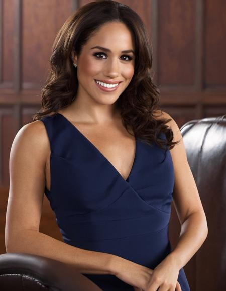

Harvey Specter - Abogado de Litigios y Negociaciones Corporativas
Harvey Specter es conocido como uno de los mejores litigantes de su generación. Su estilo directo y su carisma le han permitido construir una carrera basada en ganar casos imposibles y cerrar los acuerdos más ambiciosos para sus clientes. Su especialidad radica en litigios corporativos de alto riesgo, fusiones y adquisiciones, y disputas contractuales. Gracias a su habilidad para anticipar movimientos legales y psicológicos de la oposición, Harvey es el abogado ideal para empresas que buscan no solo proteger, sino también maximizar sus intereses. Su lema es claro:
"No juego a no perder, juego para ganar".
Alex Williams , JD, es abogado corporativo
Alex Williams lidera el departamento de derecho energético y comercial, donde se encarga de asesorar a empresas en temas regulatorios, contratos de suministro y operaciones transnacionales. Su experiencia en el sector energético lo convierte en un referente para clientes que buscan soluciones innovadoras y sostenibles en un entorno legal complejo. Alex también maneja importantes fusiones y adquisiciones comerciales, garantizando que las transacciones se realicen con seguridad y eficacia. Su habilidad para negociar en contextos de alta presión lo convierte en un socio estratégico invaluable para sus clientes.
Amanda Litt - Experta en Derecho de Familia y Mediación
Amanda Litt aporta al bufete su enfoque humanizado en los casos más personales y delicados. Como especialista en derecho de familia, maneja casos de divorcios, adopciones, custodia de menores y acuerdos prenupciales. Su habilidad para mediar en conflictos familiares le permite resolver disputas de manera amistosa, ahorrando tiempo, dinero y estrés emocional a las partes involucradas. Amanda combina su conocimiento legal con un enfoque comprensivo y resolutivo, lo que la hace ideal para los clientes que buscan una solución equilibrada en situaciones difíciles.
Jessica Pearson - Directora Ejecutiva y Experta en Derecho Corporativo Estratégico
Jessica Pearson es la líder indiscutible del bufete, una estratega con una visión global para los negocios y el derecho. Su experiencia abarca desde la reestructuración de empresas hasta la asesoría en expansiones internacionales. Jessica combina su conocimiento legal con una habilidad excepcional para manejar equipos, mantener relaciones estratégicas y resolver crisis legales complejas. Su enfoque firme pero justo la convierte en un modelo a seguir, inspirando tanto a su equipo como a sus clientes. Su liderazgo es la base sobre la que se construye el éxito del bufete.
Louis Litt - Líder en Derecho Financiero y Fiscal
Louis Litt es el corazón técnico del bufete, reconocido por su experiencia en derecho financiero y fiscal. Maneja desde complejas auditorías fiscales hasta la planificación financiera de grandes corporaciones, asegurando que sus clientes operen dentro del marco legal mientras maximizan sus beneficios. Louis también es experto en disputas tributarias y estructuras financieras internacionales. Su pasión por la perfección y su obsesión por los detalles lo convierten en una figura clave para los clientes que necesitan un enfoque riguroso y confiable.

Mike Ross - Especialista en Derecho Corporativo y Propiedad Intelectual
Mike Ross es el abogado prodigio del bufete, conocido por su memoria fotográfica y su habilidad para resolver problemas legales de forma creativa. Aunque su formación no fue convencional, su desempeño es impecable, especialmente en derecho corporativo, propiedad intelectual y casos relacionados con innovación tecnológica. Mike asesora a empresas emergentes y grandes corporaciones para estructurar contratos, proteger patentes y manejar operaciones comerciales complejas. Su enfoque humano y su compromiso con la justicia lo distinguen, asegurando siempre que los intereses de sus clientes se alineen con prácticas éticas.

Rachel Zane - Abogada de Derecho Laboral y Compliance
Rachel Zane, además de ser una excelente abogada, es un modelo de profesionalismo y empatía en el bufete. Su especialización en derecho laboral la convierte en una defensora de los derechos de los empleados y una guía confiable para empresas que buscan crear ambientes laborales justos y cumplir con las leyes de empleo. También lidera proyectos de compliance corporativo, ayudando a sus clientes a implementar políticas internas que eviten conflictos legales. Su enfoque meticuloso y su capacidad para conectar con las personas hacen que Rachel sea una pieza clave en la resolución de conflictos sensibles.
Samantha Wheeler - Abogada de Litigios Estratégicos y Derecho Penal
Samantha Wheeler es una defensora implacable, conocida por su valentía en el tribunal y su habilidad para desarrollar estrategias legales innovadoras. Especializada en derecho penal y litigios estratégicos, Samantha representa tanto a individuos como a empresas en casos complejos, desde investigaciones gubernamentales hasta fraudes financieros. Su enfoque audaz y persuasivo, combinado con una dedicación inquebrantable a sus clientes, garantiza que enfrente cualquier desafío legal con determinación. Para Samantha, cada caso es una batalla que merece ser ganada.